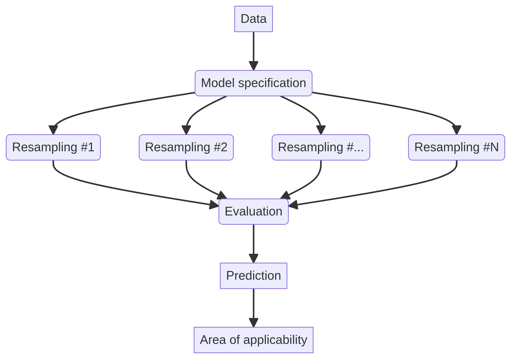
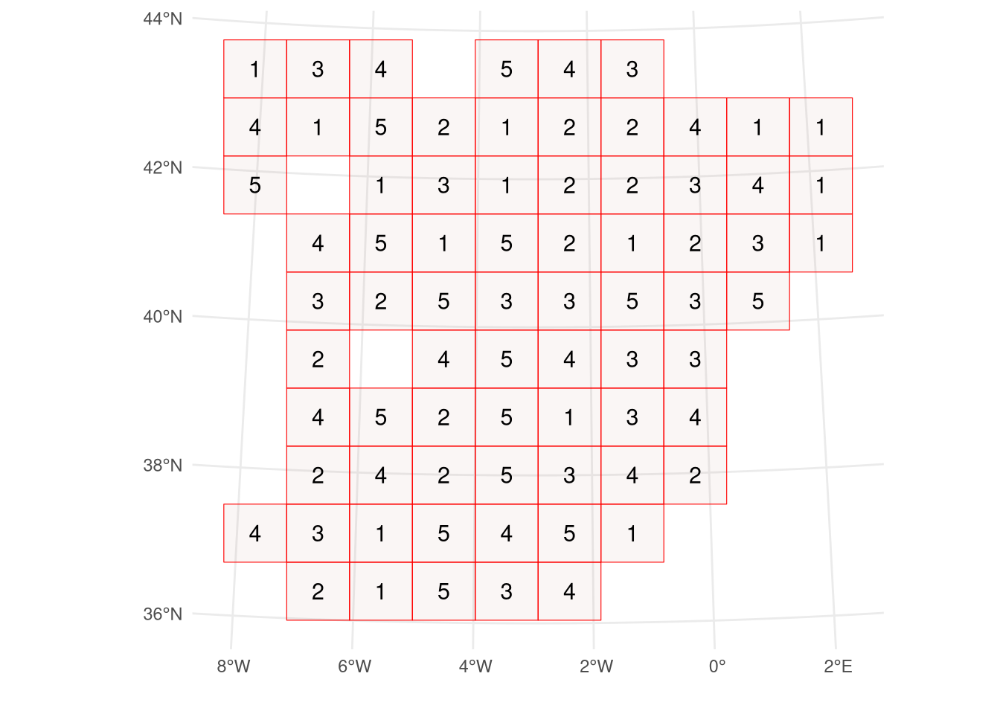
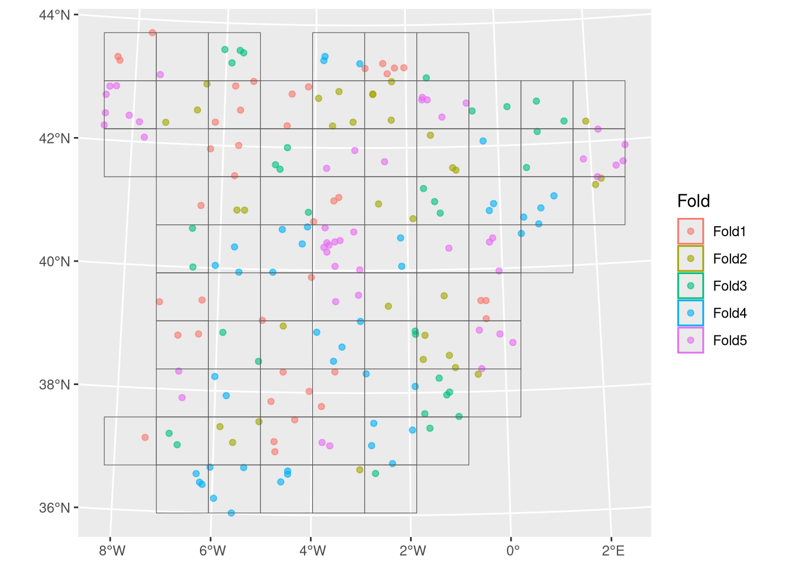
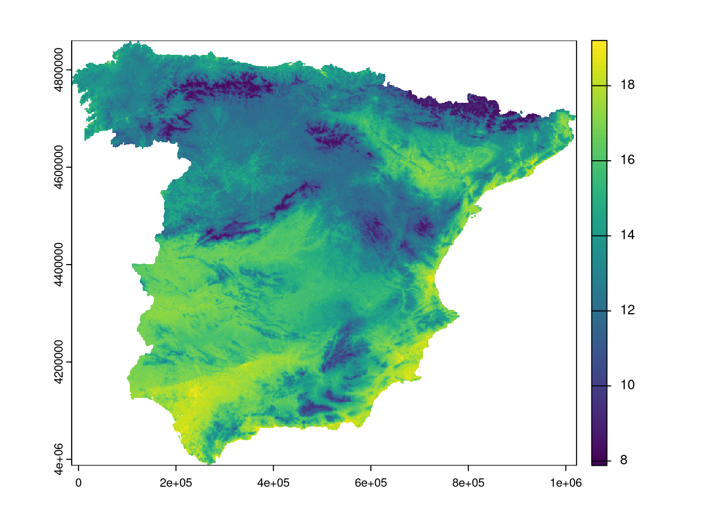
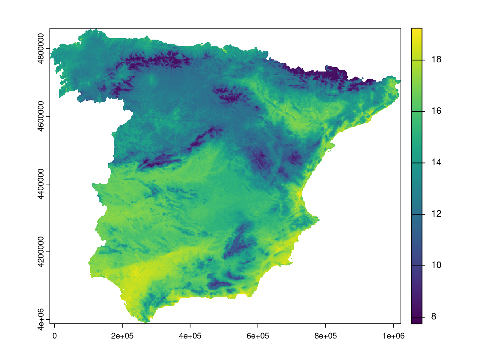
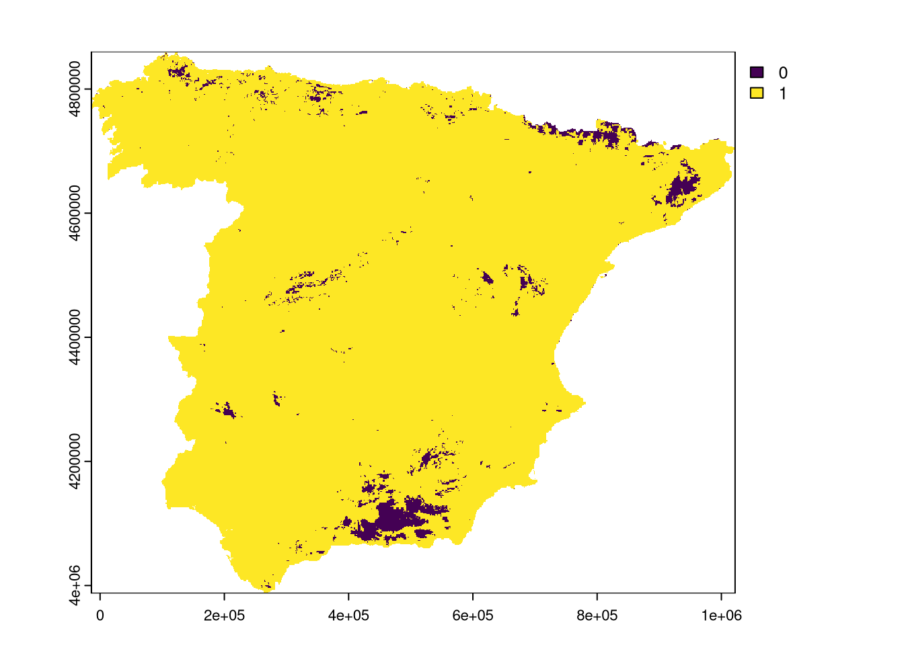

![]()
library(terra)
library(sf)
train_points <- sf::read_sf("https://github.com/LOEK-RS/FOSSGIS2025-examples/raw/refs/heads/main/data/temp_train.gpkg")
predictor_stack <- terra::rast("https://github.com/LOEK-RS/FOSSGIS2025-examples/raw/refs/heads/main/data/predictors.tif")Spatial machine learning with R: caret, tidymodels, and mlr3
rstats
sml
This is the first part of a blog post series on spatial machine learning with R.
- Part 2: Spatial machine learning with caret
- Part 3: Spatial machine learning with the tidymodels framework
- Part 4: Spatial machine learning with mlr3
- Part 5: Specialized R packages for spatial machine learning: An introduction to RandomForestsGLS, spatialRF, and meteo
- Part 6: Specialized R packages for spatial cross-validation: sperrorest and blockCV
The R language has a variety of packages for machine learning, and many of them can be used for machine learning tasks in a spatial context (spatial machine learning). Spatial machine learning is generally different from traditional machine learning, as variables located closer to each other are often more similar than those located further apart. Thus, we need to consider that when building machine learning models.
In this blog post, we compare three of the most popular machine learning frameworks in R: caret, tidymodels, and mlr3. We use a simple example to demonstrate how to use these frameworks for a spatial machine learning task and how their workflows differ. The goal here is to provide a general sense of how the spatial machine learning workflow looks like, and how different frameworks can be used to achieve the same goal.

Inputs
Our task is to predict the temperature in Spain using a set of covariates. We have two datasets for that purpose: the first one, temperature_train, contains the temperature measurements from 195 locations in Spain, and the second one, predictor_stack, contains the covariates we will use to predict the temperature.1 These covariates include variables such as population density (popdens), distance to the coast (coast), and elevation (elev), among others.
We use a subset of fourteen of the available covariates to predict the temperature. But before doing that, to prepare our data for modeling, we need to extract the covariate values at the locations of our training points.
predictor_names <- names(predictor_stack)[1:14]
temperature_train <- terra::extract(predictor_stack[[predictor_names]],
train_points,
bind = TRUE
) |>
sf::st_as_sf()Now, our temperature_train dataset contains the temperature measurements and the covariate values at each location and is ready for modeling.
Loading packages
Using each of the frameworks requires loading the respective packages.
library(caret) # for modeling
library(blockCV) # for spatial cross-validation
library(CAST) # for area of applicabilitylibrary(tidymodels) # metapackage for modeling
library(spatialsample) # for spatial cross-validation
library(waywiser) # for area of applicability
library(vip) # for variable importance (used in AOA)library(mlr3verse) # metapackage for mlr3 modeling
library(mlr3spatiotempcv) # for spatial cross-validation
library(CAST) # for area of applicability
lgr::get_logger("mlr3")$set_threshold("warn")Model specification
Each of the frameworks has its own way of setting up the modeling workflow. This may include defining the model, the resampling method, and the hyperparameter values2. In this example, we use random forest models as implemented in the ranger package with the following hyperparameters:
mtry: the number of variables randomly sampled as candidates at each split of 8splitrule: the splitting rule of"extratrees"min.node.size: the minimum size of terminal nodes of 5
We also use a spatial cross-validation method with 5 folds. It means that the data is divided into many spatial blocks, and each block is assigned to a fold. The model is trained on a set of blocks belonging to the training set and evaluated on the remaining blocks. Note that each framework has its own way of defining the resampling method, and thus, the implementation and the folds may differ slightly.
For caret, we define the hyperparameter grid using the expand.grid() function, and the resampling method using the trainControl() function. In this case, to use spatial cross-validation, we use the blockCV package to create the folds, and then pass them to the trainControl() function.
set.seed(22)
# hyperparameters
tn_grid <- expand.grid(
mtry = 8,
splitrule = "extratrees",
min.node.size = 5
)
# resampling
spatial_blocks <- blockCV::cv_spatial(
temperature_train,
k = 5,
hexagon = FALSE,
progress = FALSE
)
train test
1 155 40
2 160 35
3 155 40
4 154 41
5 156 39
train_ids <- lapply(spatial_blocks$folds_list, function(x) x[[1]])
test_ids <- lapply(spatial_blocks$folds_list, function(x) x[[2]])
tr_control <- caret::trainControl(
method = "cv",
index = train_ids,
indexOut = test_ids,
savePredictions = TRUE
)In tidymodels, the steps are to:
- Specify the modeling formula using the
recipe()function. - Define the model using a function from the parsnip package, including the hyperparameters.
- Create a workflow using the
workflow()function, which combines the recipe and the model. - Define the resampling method using the
spatial_block_cv()function from the spatialsample package.
set.seed(22)
form <- as.formula(paste0("temp ~ ", paste(predictor_names, collapse = " + ")))
recipe <- recipes::recipe(form, data = temperature_train)
rf_model <- parsnip::rand_forest(
trees = 100,
mtry = 8,
min_n = 5,
mode = "regression"
) |>
set_engine("ranger", splitrule = "extratrees", importance = "impurity")
workflow <- workflows::workflow() |>
workflows::add_recipe(recipe) |>
workflows::add_model(rf_model)
block_folds <- spatialsample::spatial_block_cv(temperature_train, v = 5)
spatialsample::autoplot(block_folds)
The basic mlr3 steps are connected to its terminology:
- Task: define the task using the
as_task_regr_st()function, which specifies the target variable and the data. - Learner: define the model using the
lrn()function, which specifies the model type and the hyperparameters. - Resampling: define the resampling method using the
rsmp()function, which specifies the type of resampling and the number of folds. Here, we use thespcv_blockresampling method.
set.seed(22)
task <- mlr3spatiotempcv::as_task_regr_st(temperature_train, target = "temp")
learner <- mlr3::lrn("regr.ranger",
num.trees = 100,
importance = "impurity",
mtry = 8,
min.node.size = 5,
splitrule = "extratrees"
)
resampling <- mlr3::rsmp("spcv_block",
folds = 5,
cols = 10, rows = 10
)Modeling
The main function of the caret package is train(), which takes the formula, the data, the model type, the tuning grid, the training control (including the resampling method), and some other arguments (e.g., the number of trees). The train() function will automatically perform the resampling and hyperparameter tuning (if applicable). The final model is stored in the finalModel object.
model_caret <- caret::train(
temp ~ .,
data = st_drop_geometry(temperature_train),
method = "ranger",
tuneGrid = tn_grid,
trControl = tr_control,
num.trees = 100,
importance = "impurity"
)
model_caret_final <- model_caret$finalModelIn tidymodels, the fit_resamples() function takes the previously defined workflow and the resampling folds. Here, we also use the control argument to save the predictions and the workflow, which can be useful for later analysis. The fit_best() function is used to fit the best model based on the resampling results.
rf_spatial <- tune::fit_resamples(
workflow,
resamples = block_folds,
control = tune::control_resamples(save_pred = TRUE, save_workflow = TRUE)
)
model_tidymodels <- fit_best(rf_spatial)The mlr3 workflow applies the resample() function to the task, the learner, and the resampling method. Then, to get the final model, we use the train() function on previously defined task and learner.
model_mlr3 <- mlr3::resample(
task = task,
learner = learner,
resampling = resampling
)
learner$train(task)Evaluation
After the models are trained, we want to evaluate their performance. Here, we use two of the most common metrics for regression tasks: the root mean square error (RMSE) and the coefficient of determination (R2).
RMSE and R2 are calculated by default in caret. The performance metrics are then stored in the results object of the model.
model_caret$results mtry splitrule min.node.size RMSE Rsquared MAE RMSESD
1 8 extratrees 5 1.119936 0.8406388 0.9008884 0.2269326
RsquaredSD MAESD
1 0.06159361 0.1399976RMSE and R2 are calculated by default in tidymodels. The performance metrics are extracted from the resampling results using the collect_metrics() function.
tune::collect_metrics(rf_spatial)# A tibble: 2 × 6
.metric .estimator mean n std_err .config
<chr> <chr> <dbl> <int> <dbl> <chr>
1 rmse standard 1.10 5 0.0903 Preprocessor1_Model1
2 rsq standard 0.858 5 0.0424 Preprocessor1_Model1We need to specify the measures we want to calculate using the msr() function. Then, the aggregate() method is used to calculate the selected performance metrics.
my_measures <- c(mlr3::msr("regr.rmse"), mlr3::msr("regr.rsq"))
model_mlr3$aggregate(measures = my_measures)regr.rmse rsq
1.1391701 0.8209292 Prediction
Our goal is to predict the temperature in Spain using the covariates from the predictor_stack dataset. Thus, we want to obtain a map of the predicted temperature values for the entire country. The predict() function of the terra package makes model predictions on the new raster data.
pred_caret <- terra::predict(predictor_stack, model_caret, na.rm = TRUE)
plot(pred_caret)pred_tidymodels <- terra::predict(predictor_stack, model_tidymodels, na.rm = TRUE)
plot(pred_tidymodels)
pred_mlr3 <- terra::predict(predictor_stack, learner, na.rm = TRUE)
plot(pred_mlr3)
Area of applicability
The area of applicability (AoA) is a method to assess the what is the area of the input space that is similar to the training data. It is a useful tool to evaluate the model performance and to identify the areas where the model can be applied. Areas outside the AoA are considered to be outside the model’s applicability domain, and thus, the predictions in these areas should be interpreted with caution or not used at all.
The AoA method’s original implementation is in the CAST package – a package that extends the caret package. The AoA is calculated using the aoa() function, which takes the new data (the covariates) and the model as input.
AOA_caret <- CAST::aoa(
newdata = predictor_stack,
model = model_caret,
verbose = FALSE
)
plot(AOA_caret$AOA)The waywiser package implements the AoA method for tidymodels3. The ww_area_of_applicability() function takes the training data and variable importance as input. Then, to obtain the AoA, we use the predict() function from the terra package.4
model_aoa <- waywiser::ww_area_of_applicability(
st_drop_geometry(temperature_train[, predictor_names]),
importance = vip::vi_model(model_tidymodels)
)
AOA_tidymodels <- terra::predict(predictor_stack, model_aoa)
plot(AOA_tidymodels$aoa)The CAST package can calculate the AoA for mlr3 models. However, then we need to specify various arguments, such as a raster with covariates, the training data, the variables to be used, the weights of the variables, and the cross-validation folds.
rsmp_cv <- resampling$instantiate(task)
AOA_mlr3 <- CAST::aoa(
newdata = predictor_stack,
train = as.data.frame(task$data()),
variables = task$feature_names,
weight = data.frame(t(learner$importance())),
CVtest = rsmp_cv$instance[order(row_id)]$fold,
verbose = FALSE
)
plot(AOA_mlr3$AOA)
Conclusion
In this blog post, we compared three of the most popular machine learning frameworks in R: caret, tidymodels, and mlr3. We demonstrated how to use these frameworks for a spatial machine learning task, including model specification, training, evaluation, prediction, and obtaining the area of applicability.
There is a lot of overlap in functionality between the three frameworks. Simultaneously, the frameworks differ in their design philosophy and implementation. Some, as caret, are more focused on providing a consistent and concise interface, but it offers limited flexibility. Others, like tidymodels and mlr3, are more modular and flexible, allowing for more complex workflows and customizations, which also makes them more complex to learn and use.
Many additional steps can be added to the presented workflow, such as feature engineering, variable selection, hyperparameter tuning, model interpretation, and more. In the next blog posts, we will show these three frameworks in more detail, and then also present some other packages that can be used for spatial machine learning in R.
Acknowledgments
This blog post series is possible due to the financial support of the European Union’s Horizon Europe research and innovation programme under the Marie Skłodowska-Curie grant agreement No. 101147446.
Footnotes
Source of the data: Milà et al. (2024), https://doi.org/10.5194/gmd-17-6007-2024↩︎
Or the hyperparameter tuning grid, in a more advanced scenario.↩︎
It is not a wrapper for the CAST package, but a separate implementation with some differences as you may read in the function documentation –
?ww_area_of_applicability↩︎Thus, this approach allow to check the AoA for each new data set, not only the training data.↩︎
Reuse
Citation
BibTeX citation:
@online{nowosad2025,
author = {Nowosad, Jakub},
title = {Spatial Machine Learning with {R:} Caret, Tidymodels, and
Mlr3},
date = {2025-04-30},
url = {https://geocompx.org/post/2025/sml-bp1/},
langid = {en}
}
For attribution, please cite this work as:
Nowosad, Jakub. 2025. “Spatial Machine Learning with R: Caret,
Tidymodels, and Mlr3.” April 30, 2025. https://geocompx.org/post/2025/sml-bp1/.